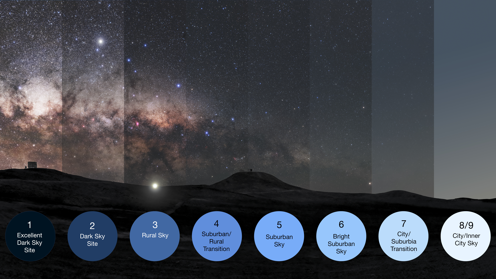
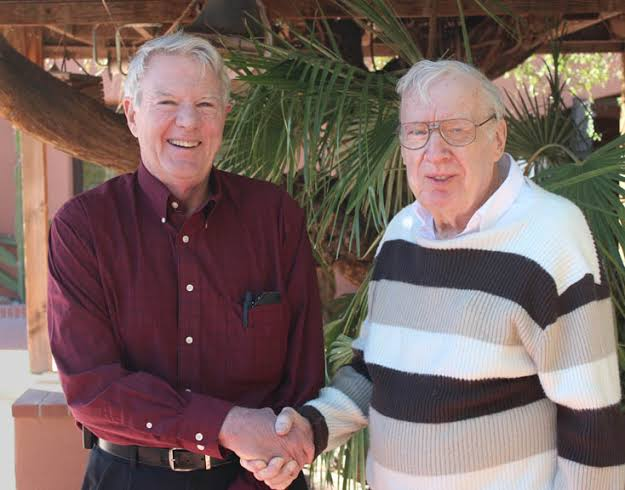
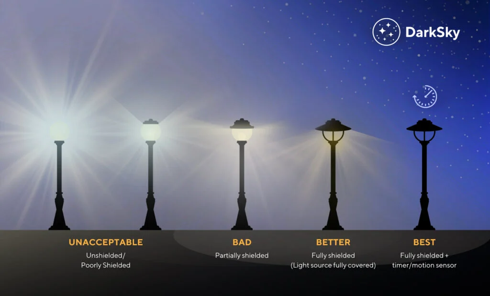

What is Artifical Light and Night?
Artifical Light at Night (ALAN) is light from human sources. Think of streetlights, buildings, vehicles, etc... Anything that shines outdoors after dark. It is the underlying cause of light pollution and what researchers call skyglow. In short, this is the brightening of the sky.
The Bortle Scale

Source: Wikipedia
The Bortle Scale is a nine level classification system for rating how dark the night sky is. Class 1 skies are the darkest skies one can find anywhere on Earth. Class 9 are the washed out skies above inner-cities. Each class is defined based on what celestial objects one can observe with the naked eye overhead, such as the faintest star visible to the naked eye. Under high classification skies even the Milky Way disappears, leaving only the the brightest stars and planets. Class 1 dark skies, however, fill the night with stars and celestial objects, leaving a site most have never seen before.
The Dark Sky Movement

Source: DarkSky.org
In Tucson, Arizon 1988, astronomer David Crawford and physician Tim Hunter laid founded DarkSky International, laying the framework for what is known today as the Dark Sky Movement. The Dark Sky Movement is a campaign aimed at reducing light pollution and misdirected artificial light and night. It is an effort to protect the night as an environment and cultural resource.
The main goal is responsible outdoor lighting. The idea is not to eliminate lighting but to mitigate its effects. Using better lighting fixtures and policies that direct light where it is needed, and away from where it isn't.
How Can you Help?

Source: DarkSky.org
-
1. Useful
All light needs a clear purpose. Before installing or replacing a light, determine whether or not it is needed at all. Instead of light, look for alternatives. Reflective paints can reduce the need for permanently installed lighting.
-
2. Targeted
Aim light only where it is needed. Any light from a fixture that is aimed at the sky is wasted and adds to the pollution. To achieve this, always use fully shielded fixtures that point downwards.
-
3. Low Level
Choose the lowest brightness level required to meet your needs.
-
4. Controlled
When applicable, use timers and motion sensors to ensure lights are only on when needed. This simple control saves a lot of energy and eliminates unnecesary lighting. If automated control cannot be achieved, turn all lights off each night when no longer needed.
-
5. Warm-Colored
Always use lights that have a correlated color temperture (CCT) as low as possible. Try to achieve 3000K or lower. Higher CCT values contribute more to light pollution and direct harm to many animal species.